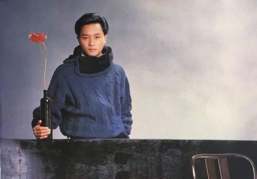

1956年9月12日生于香港，歌手、演员、音乐人，演艺圈影视歌多栖发展的代表之一。 1977年参加亚洲歌唱大赛出道，1983年以《风继续吹》在歌坛成名。1984年凭借《Monica》奠定其在香港歌坛的地位。1987年凭借专辑《爱慕》成为首位打入韩国音乐市场的粤语歌手，华语唱片在韩国销量纪录保持者。1988年，1989年获得十大劲歌金曲最受欢迎男歌星奖。1999年获得香港乐坛最高荣誉奖金针奖。2000年获得CCTV-MTV音乐盛典亚洲最杰出艺人奖。2010年入选美国CNN评出的“过去五十年里全球最知名的20位歌手或者乐团”。他涉猎不同风格的音乐题材，除擅长词曲创作外，他亦担任过MTV导演、唱片监制、演唱会艺术总监等。 1978年开始参演电视剧，在《我家的女人》中展现细腻的表演风格。80年代后期将事业重心移至影坛，成功诠释了宁采臣、旭仔、程蝶衣、欧阳锋等不同类型的角色。
张国荣一辈子风华绝代，注定是风尘中的一朵奇葩，真正的影视歌多栖发展明星，也是真正的偶像派和实力派的完美融合，也是少有的公开承认同性恋的华人，不过据说张国荣也曾经爱过女生，据说他曾经发言称，如果当年毛舜筠嫁给他，可能他的人生就会改变了，哥哥就像谪仙人一般在红尘中走了一遭，留下了无尽的传说，然后不带走一丝云彩的离开了人世。
基本资料
中文名：张国荣
外文名：Leslie Cheung（英）、レスリーチャン（日）
别名：哥哥
出生地：香港
职业：音乐人、歌手、演员、作曲人、音乐监制
身高：175cm
血型：O型
星座：处女座
祖籍：广东梅州
出生日期：1956年9月12日
逝世日期：2003年4月1日